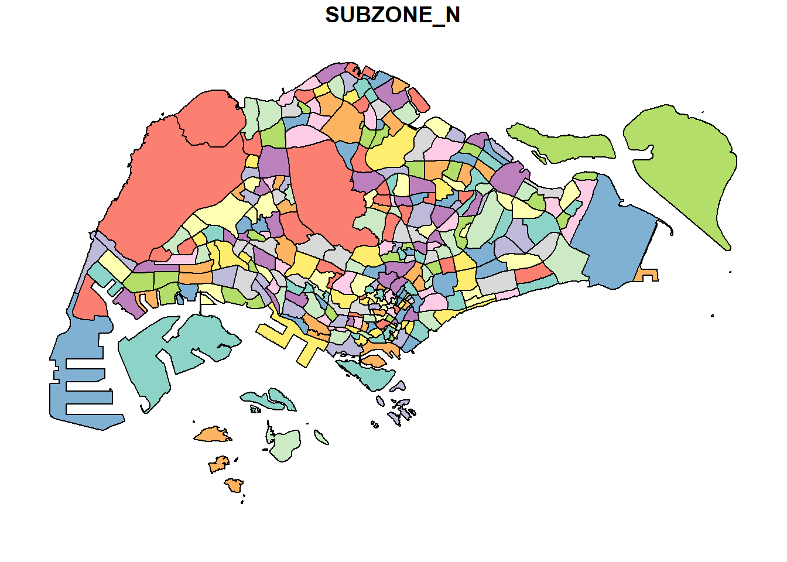
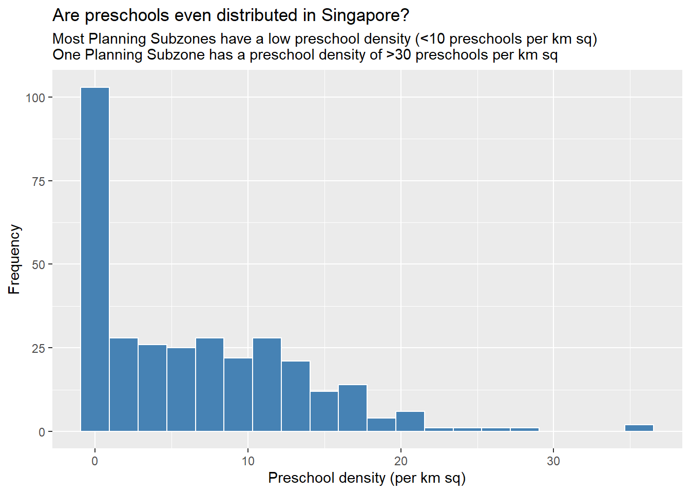
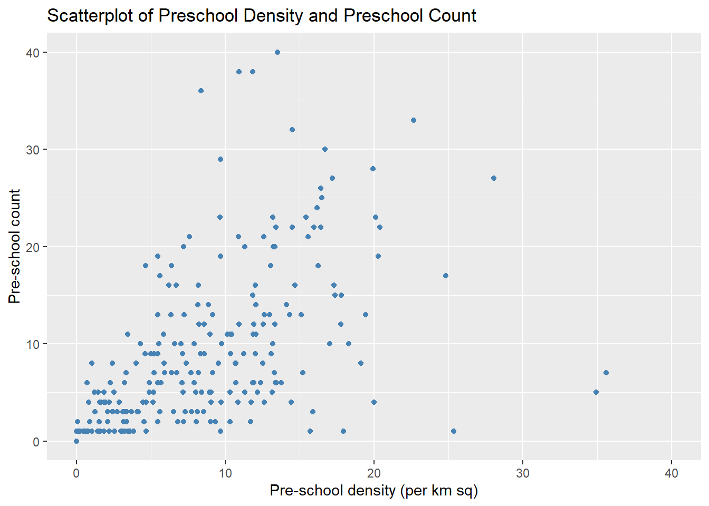

pacman::p_load(sf, tidyverse)1A: Geospatial Data Wrangling with R
1. Overview
In this hands-on exercise, I learn how to import and wrangle geospatial data in using appropriate R Packages.
2. Getting Started
The following code chunk installs and loads sf and tidyverse packages into R environment.
Note
sf package is used for importing, managing, and processing geospatial data.
The data sets used are:
Master Plan 2014 Subzone Boundary (Web) from data.gov.sg
Pre-Schools Location from data.gov.sg
Cycling Path from LTADataMall
Latest version of Singapore Airbnb listing data from Inside Airbnb
3. Importing Geospatial Data
3.1. Importing Polygon Feature Data
The following code chunk uses st_read() function from the sf package to import MP14_SUBZONE_WEB_PL shapefile into R as polygon feature data frame.
Note
When loading geospatial data in shapefile format, two arguments are utilized: firstly, dsn to specify the data path, and secondly, layer to indicate the name of the shapefile. It’s not necessary to include file extensions such as .shp, .dbf, .prj, or .shx.
mpsz <- st_read(dsn = "data/geospatial", layer = "MP14_SUBZONE_WEB_PL")Reading layer `MP14_SUBZONE_WEB_PL' from data source
`D:\scwsu\ISSS624\Hands-on_Ex1\data\geospatial' using driver `ESRI Shapefile'
Simple feature collection with 323 features and 15 fields
Geometry type: MULTIPOLYGON
Dimension: XY
Bounding box: xmin: 2667.538 ymin: 15748.72 xmax: 56396.44 ymax: 50256.33
Projected CRS: SVY21The `mpsz` simple feature data frame consists of 323 multipolygon features and includes 15 fields. It is defined using the svy21 projected coordinate system.
Note
The svy21, also known as the Singapore svy21 Projected Coordinate System, is a coordinate system employed by Singapore. It uses the Transverse Mercator projection, mapping geographical coordinates that reference the WGS 84 ellipsoid.
The bounding box of this system displays the extent of the data in both the x and y dimensions.
3.2. Importing Polyline Feature Data
The following code chunk uses `st_read()` function from the sf package to import `CyclingPath` shapefile into R as line feature data frame.
cyclingpath <- st_read(dsn = "data/geospatial",
layer = "CyclingPathGazette")Reading layer `CyclingPathGazette' from data source
`D:\scwsu\ISSS624\Hands-on_Ex1\data\geospatial' using driver `ESRI Shapefile'
Simple feature collection with 2558 features and 2 fields
Geometry type: MULTILINESTRING
Dimension: XY
Bounding box: xmin: 11854.32 ymin: 28347.98 xmax: 42626.09 ymax: 48948.15
Projected CRS: SVY21The `cyclingpath` linestring feature data frame contains a total of 2558 features and comprises 2 fields. It is also defined within the svy21 projected coordinate system.
3.3. Importing GIS Data
The following code chunk uses `st_read()` function from the sf package to import `PreSchoolsLocation` into R.
Note
The complete path and kml file extension must be provided in kml format.
preschool <- st_read("data/geospatial/PreSchoolsLocation.kml")Reading layer `PRESCHOOLS_LOCATION' from data source
`D:\scwsu\ISSS624\Hands-on_Ex1\data\geospatial\PreSchoolsLocation.kml'
using driver `KML'
Simple feature collection with 2290 features and 2 fields
Geometry type: POINT
Dimension: XYZ
Bounding box: xmin: 103.6878 ymin: 1.247759 xmax: 103.9897 ymax: 1.462134
z_range: zmin: 0 zmax: 0
Geodetic CRS: WGS 84The `preschool` point feature data frame contains a combined total of 2290 features and comprises 2 fields. Notably, unlike the two preceding simple feature data frames, `preschool` employs the wgs84 geographic coordinate system.
Note
wgs84 represents the latest version of the World Geodetic System (WGS), a global standard utilized in fields like cartography, geodesy, and satellite navigation, including GPS. It is a geographic coordinate system that determines locations on Earth using a three-dimensional spherical surface model.
4. Checking the Content of A Simple Feature Data Frame
The column in the simple feature (sf) data frame that holds the geometries is structured as a list with a class of sfc. There are two methods to inspect the data within it:
Obtain the geometry list-column by using either `mpsz$geom` or `mpsz[[i]]`.
Utilize `st_geometry` to present details about the feature class, including information about the geometry type, the geographic extent of the features, and the coordinate system used in the data.
st_geometry(mpsz)Geometry set for 323 features
Geometry type: MULTIPOLYGON
Dimension: XY
Bounding box: xmin: 2667.538 ymin: 15748.72 xmax: 56396.44 ymax: 50256.33
Projected CRS: SVY21
First 5 geometries:A peek into the data using the `glimpse` function from the dplyr package unveils relevant attribute details, including the data type of each field.
glimpse(mpsz)Rows: 323
Columns: 16
$ OBJECTID <int> 1, 2, 3, 4, 5, 6, 7, 8, 9, 10, 11, 12, 13, 14, 15, 16, 17, …
$ SUBZONE_NO <int> 1, 1, 3, 8, 3, 7, 9, 2, 13, 7, 12, 6, 1, 5, 1, 1, 3, 2, 2, …
$ SUBZONE_N <chr> "MARINA SOUTH", "PEARL'S HILL", "BOAT QUAY", "HENDERSON HIL…
$ SUBZONE_C <chr> "MSSZ01", "OTSZ01", "SRSZ03", "BMSZ08", "BMSZ03", "BMSZ07",…
$ CA_IND <chr> "Y", "Y", "Y", "N", "N", "N", "N", "Y", "N", "N", "N", "N",…
$ PLN_AREA_N <chr> "MARINA SOUTH", "OUTRAM", "SINGAPORE RIVER", "BUKIT MERAH",…
$ PLN_AREA_C <chr> "MS", "OT", "SR", "BM", "BM", "BM", "BM", "SR", "QT", "QT",…
$ REGION_N <chr> "CENTRAL REGION", "CENTRAL REGION", "CENTRAL REGION", "CENT…
$ REGION_C <chr> "CR", "CR", "CR", "CR", "CR", "CR", "CR", "CR", "CR", "CR",…
$ INC_CRC <chr> "5ED7EB253F99252E", "8C7149B9EB32EEFC", "C35FEFF02B13E0E5",…
$ FMEL_UPD_D <date> 2014-12-05, 2014-12-05, 2014-12-05, 2014-12-05, 2014-12-05…
$ X_ADDR <dbl> 31595.84, 28679.06, 29654.96, 26782.83, 26201.96, 25358.82,…
$ Y_ADDR <dbl> 29220.19, 29782.05, 29974.66, 29933.77, 30005.70, 29991.38,…
$ SHAPE_Leng <dbl> 5267.381, 3506.107, 1740.926, 3313.625, 2825.594, 4428.913,…
$ SHAPE_Area <dbl> 1630379.27, 559816.25, 160807.50, 595428.89, 387429.44, 103…
$ geometry <MULTIPOLYGON [m]> MULTIPOLYGON (((31495.56 30..., MULTIPOLYGON (…Using `head()` in the base R provides a comprehensive view of a feature object`s information.
Note
Adjust the “n” argument to modify the number of observations to a reasonable value.
head(mpsz, n=5)Simple feature collection with 5 features and 15 fields
Geometry type: MULTIPOLYGON
Dimension: XY
Bounding box: xmin: 25867.68 ymin: 28369.47 xmax: 32362.39 ymax: 30435.54
Projected CRS: SVY21
OBJECTID SUBZONE_NO SUBZONE_N SUBZONE_C CA_IND PLN_AREA_N
1 1 1 MARINA SOUTH MSSZ01 Y MARINA SOUTH
2 2 1 PEARL'S HILL OTSZ01 Y OUTRAM
3 3 3 BOAT QUAY SRSZ03 Y SINGAPORE RIVER
4 4 8 HENDERSON HILL BMSZ08 N BUKIT MERAH
5 5 3 REDHILL BMSZ03 N BUKIT MERAH
PLN_AREA_C REGION_N REGION_C INC_CRC FMEL_UPD_D X_ADDR
1 MS CENTRAL REGION CR 5ED7EB253F99252E 2014-12-05 31595.84
2 OT CENTRAL REGION CR 8C7149B9EB32EEFC 2014-12-05 28679.06
3 SR CENTRAL REGION CR C35FEFF02B13E0E5 2014-12-05 29654.96
4 BM CENTRAL REGION CR 3775D82C5DDBEFBD 2014-12-05 26782.83
5 BM CENTRAL REGION CR 85D9ABEF0A40678F 2014-12-05 26201.96
Y_ADDR SHAPE_Leng SHAPE_Area geometry
1 29220.19 5267.381 1630379.3 MULTIPOLYGON (((31495.56 30...
2 29782.05 3506.107 559816.2 MULTIPOLYGON (((29092.28 30...
3 29974.66 1740.926 160807.5 MULTIPOLYGON (((29932.33 29...
4 29933.77 3313.625 595428.9 MULTIPOLYGON (((27131.28 30...
5 30005.70 2825.594 387429.4 MULTIPOLYGON (((26451.03 30...5. Plotting Geospatial Data
In the realm of geospatial data analytics, merely examining feature details is inadequate. To visualize geospatial features, you can employ the `plot()` function from R Graphic.
Note
By default, a sf object generates a multiplot. The subsequent plot illustrates the initial 9 of 15 attributes. To adjust the quantity of attributes displayed in the plot, modify the `max.plot` parameter to a desired value.
plot(mpsz)
To plot the geometric data exclusively , apply `st_geometry` to the data frame prior to initiating the plot.
plot(st_geometry(mpsz))
A plot focusing on a particular attribute of the sf object can also be created.
plot(mpsz["PLN_AREA_N"])
plot(mpsz["SUBZONE_N"])
plot(mpsz["REGION_N"])
Note
`plot()` is meant for plotting the geospatial object for a quick look. For high cartographic quality plot, other R package such as tmap should be used.
6. Map Projection
Map projection is a critical characteristic of geospatial data. To carry out geoprocessing tasks with two different geospatial datasets, they need to be aligned within the same coordinate system.
The process of transforming a simple feature data frame from one coordinate system to another is technically referred to as projection transformation.
6.1. Assigning EPSG code to a simple feature data frame
Typical problems that may arise while importing geospatial data into R include:
The absence of a coordinate system for the original data, which can occur if, for instance, the .proj file is missing for an ESRI shapefile.
Incorrect assignment of a coordinate system during the import procedure.
To examine the coordinate system of the `mpsz` simple feature data frame, employ the `st_crs()` function from the sf package.
st_crs(mpsz)Coordinate Reference System:
User input: SVY21
wkt:
PROJCRS["SVY21",
BASEGEOGCRS["SVY21[WGS84]",
DATUM["World Geodetic System 1984",
ELLIPSOID["WGS 84",6378137,298.257223563,
LENGTHUNIT["metre",1]],
ID["EPSG",6326]],
PRIMEM["Greenwich",0,
ANGLEUNIT["Degree",0.0174532925199433]]],
CONVERSION["unnamed",
METHOD["Transverse Mercator",
ID["EPSG",9807]],
PARAMETER["Latitude of natural origin",1.36666666666667,
ANGLEUNIT["Degree",0.0174532925199433],
ID["EPSG",8801]],
PARAMETER["Longitude of natural origin",103.833333333333,
ANGLEUNIT["Degree",0.0174532925199433],
ID["EPSG",8802]],
PARAMETER["Scale factor at natural origin",1,
SCALEUNIT["unity",1],
ID["EPSG",8805]],
PARAMETER["False easting",28001.642,
LENGTHUNIT["metre",1],
ID["EPSG",8806]],
PARAMETER["False northing",38744.572,
LENGTHUNIT["metre",1],
ID["EPSG",8807]]],
CS[Cartesian,2],
AXIS["(E)",east,
ORDER[1],
LENGTHUNIT["metre",1,
ID["EPSG",9001]]],
AXIS["(N)",north,
ORDER[2],
LENGTHUNIT["metre",1,
ID["EPSG",9001]]]]The printout above shows the EPSG as 9001. Nonetheless, the `mpsz` data frame actually utilizes the svy21 projection, for which the appropriate EPSG code is 3414. To apply the right EPSG code to the `mpsz` data frame, utilize the `st_set_crs()` function from the sf package.
mpsz3414 <- st_set_crs(mpsz, 3414)The EPSG code indicated is now 3414.
st_crs(mpsz3414)Coordinate Reference System:
User input: EPSG:3414
wkt:
PROJCRS["SVY21 / Singapore TM",
BASEGEOGCRS["SVY21",
DATUM["SVY21",
ELLIPSOID["WGS 84",6378137,298.257223563,
LENGTHUNIT["metre",1]]],
PRIMEM["Greenwich",0,
ANGLEUNIT["degree",0.0174532925199433]],
ID["EPSG",4757]],
CONVERSION["Singapore Transverse Mercator",
METHOD["Transverse Mercator",
ID["EPSG",9807]],
PARAMETER["Latitude of natural origin",1.36666666666667,
ANGLEUNIT["degree",0.0174532925199433],
ID["EPSG",8801]],
PARAMETER["Longitude of natural origin",103.833333333333,
ANGLEUNIT["degree",0.0174532925199433],
ID["EPSG",8802]],
PARAMETER["Scale factor at natural origin",1,
SCALEUNIT["unity",1],
ID["EPSG",8805]],
PARAMETER["False easting",28001.642,
LENGTHUNIT["metre",1],
ID["EPSG",8806]],
PARAMETER["False northing",38744.572,
LENGTHUNIT["metre",1],
ID["EPSG",8807]]],
CS[Cartesian,2],
AXIS["northing (N)",north,
ORDER[1],
LENGTHUNIT["metre",1]],
AXIS["easting (E)",east,
ORDER[2],
LENGTHUNIT["metre",1]],
USAGE[
SCOPE["Cadastre, engineering survey, topographic mapping."],
AREA["Singapore - onshore and offshore."],
BBOX[1.13,103.59,1.47,104.07]],
ID["EPSG",3414]]6.2 Transforming the projection of preschool from wgs84 to svy21
In geospatial analytics, it is a common practice to convert data from a Geographic Coordinate System (GCS) to a Projected Coordinate System (PCS). GCS may not be suitable for analyses that require accurate distance or area measurements, as the length of one degree varies significantly with latitude — it`s shorter near the poles and longer near the equator. On the other hand, PCS offers uniform measurements of length and area across different locations. The `st_transform()` function in the sf package is used for mathematically reprojecting data frames from one coordinate system to another.
Given that the `preschool` data frame is currently in the wgs84 coordinate system, it can be effectively transformed to the svy21 projected coordinate system, which has the coordinate reference system (CRS) code of 3414.
preschool3414 <- st_transform(preschool,
crs = 3414)`preschool3414` data frame is now in svy21 projected coordinate system.
st_geometry(preschool3414)Geometry set for 2290 features
Geometry type: POINT
Dimension: XYZ
Bounding box: xmin: 11810.03 ymin: 25596.33 xmax: 45404.24 ymax: 49300.88
z_range: zmin: 0 zmax: 0
Projected CRS: SVY21 / Singapore TM
First 5 geometries:
Note
The success of the transformation can be confirmed by examining the x and y extents of the data as shown in the Bounding Box. Most geographic coordinate systems operate within a decimal degree range of 0-360. However, after the projection transformation of the `preschool3414` data frame, the x and y extents of the data will be significantly greater than 360, indicating the change to a projected coordinate system.
7. Importing and Converting an Aspatial Data
Typically, one might encounter aspatial data that includes two separate fields representing the x- and y-coordinates of the data points. Such aspatial data can be transformed from a tibble data frame into a simple feature data frame, enabling more comprehensive geospatial analysis.
7.1. Importing Aspatial Data as Tibble Data Frame
The following code chunk uses `read_csv()` function of readr package to import the `listings.csv` data from Airbnb. The output R object is a tibble data frame called `listings`.
listings <- read_csv("data/aspatial/listings.csv")The following code chunk uses `list()` of Base R instead of `glimpse()` to examine if the data file has been imported correctly.
list(listings) [[1]]
# A tibble: 3,483 × 75
id listing_url scrape_id last_scraped source name description
<dbl> <chr> <dbl> <date> <chr> <chr> <chr>
1 71609 https://www.airbnb.co… 2.02e13 2023-09-23 previ… Vill… For 3 room…
2 71896 https://www.airbnb.co… 2.02e13 2023-09-23 previ… Home… <b>The spa…
3 71903 https://www.airbnb.co… 2.02e13 2023-09-23 previ… Home… Like your …
4 275343 https://www.airbnb.co… 2.02e13 2023-09-23 city … Rent… **IMPORTAN…
5 275344 https://www.airbnb.co… 2.02e13 2023-09-23 city … Rent… Lovely hom…
6 289234 https://www.airbnb.co… 2.02e13 2023-09-23 previ… Home… This whole…
7 294281 https://www.airbnb.co… 2.02e13 2023-09-23 city … Rent… I have 3 b…
8 324945 https://www.airbnb.co… 2.02e13 2023-09-23 city … Rent… **IMPORTAN…
9 330095 https://www.airbnb.co… 2.02e13 2023-09-23 city … Rent… **IMPORTAN…
10 369141 https://www.airbnb.co… 2.02e13 2023-09-23 city … Plac… A room in …
# ℹ 3,473 more rows
# ℹ 68 more variables: neighborhood_overview <chr>, picture_url <chr>,
# host_id <dbl>, host_url <chr>, host_name <chr>, host_since <date>,
# host_location <chr>, host_about <chr>, host_response_time <chr>,
# host_response_rate <chr>, host_acceptance_rate <chr>,
# host_is_superhost <lgl>, host_thumbnail_url <chr>, host_picture_url <chr>,
# host_neighbourhood <chr>, host_listings_count <dbl>, …The `listing` tibble data frame consists of 3483 rows and 18 columns. For the next step, `latitude` and `longitude` columns will be used.
Note
`latitude` and `longitude` columns are in decimal degree format, suggesting that the data could be in wgs84 geographic coordinate system.
7.2. Converting Tibble Data Frame to Simple Feature Data Frame
The following code chunk converts `listing` data frame into a simple feature data frame using `st_as_sf()` of sf package.
listings_sf <- st_as_sf(listings,
coords = c("longitude", "latitude"),
crs = 4326) %>%
st_transform(crs = 3414)
Note
The `coords` argument necessitates specifying the column name for the x-coordinates first, followed by the column name for the y-coordinates.
Note
The `crs` argument needs the coordinate system to be defined in the EPSG format. For instance, EPSG 4326 corresponds to the wgs84 geographic coordinate system, while EPSG 3414 represents the svy21 projected coordinate system. For EPSG codes of other countries, you can consult the website epsg.io.
glimpse(listings_sf)Rows: 3,483
Columns: 74
$ id <dbl> 71609, 71896, 71903, 2753…
$ listing_url <chr> "https://www.airbnb.com/r…
$ scrape_id <dbl> 2.023092e+13, 2.023092e+1…
$ last_scraped <date> 2023-09-23, 2023-09-23, …
$ source <chr> "previous scrape", "previ…
$ name <chr> "Villa in Singapore · ★4.…
$ description <chr> "For 3 rooms.Book room 1&…
$ neighborhood_overview <chr> NA, NA, "Quiet and view o…
$ picture_url <chr> "https://a0.muscache.com/…
$ host_id <dbl> 367042, 367042, 367042, 1…
$ host_url <chr> "https://www.airbnb.com/u…
$ host_name <chr> "Belinda", "Belinda", "Be…
$ host_since <date> 2011-01-29, 2011-01-29, …
$ host_location <chr> "Singapore", "Singapore",…
$ host_about <chr> "Hi My name is Belinda -H…
$ host_response_time <chr> "within a few hours", "wi…
$ host_response_rate <chr> "100%", "100%", "100%", "…
$ host_acceptance_rate <chr> "100%", "100%", "100%", "…
$ host_is_superhost <lgl> FALSE, FALSE, FALSE, FALS…
$ host_thumbnail_url <chr> "https://a0.muscache.com/…
$ host_picture_url <chr> "https://a0.muscache.com/…
$ host_neighbourhood <chr> "Tampines", "Tampines", "…
$ host_listings_count <dbl> 5, 5, 5, 52, 52, 5, 7, 52…
$ host_total_listings_count <dbl> 15, 15, 15, 65, 65, 15, 8…
$ host_verifications <chr> "['email', 'phone']", "['…
$ host_has_profile_pic <lgl> TRUE, TRUE, TRUE, TRUE, T…
$ host_identity_verified <lgl> TRUE, TRUE, TRUE, TRUE, T…
$ neighbourhood <chr> NA, NA, "Singapore, Singa…
$ neighbourhood_cleansed <chr> "Tampines", "Tampines", "…
$ neighbourhood_group_cleansed <chr> "East Region", "East Regi…
$ property_type <chr> "Private room in villa", …
$ room_type <chr> "Private room", "Private …
$ accommodates <dbl> 3, 1, 2, 1, 1, 4, 2, 1, 1…
$ bathrooms <lgl> NA, NA, NA, NA, NA, NA, N…
$ bathrooms_text <chr> "1 private bath", "Shared…
$ bedrooms <dbl> NA, NA, NA, NA, NA, 3, NA…
$ beds <dbl> 3, 1, 2, 1, 1, 5, 1, 1, 1…
$ amenities <chr> "[\"Private backyard \\u2…
$ price <chr> "$150.00", "$80.00", "$80…
$ minimum_nights <dbl> 92, 92, 92, 60, 60, 92, 9…
$ maximum_nights <dbl> 365, 365, 365, 999, 999, …
$ minimum_minimum_nights <dbl> 92, 92, 92, 60, 60, 92, 9…
$ maximum_minimum_nights <dbl> 92, 92, 92, 60, 60, 92, 9…
$ minimum_maximum_nights <dbl> 1125, 1125, 1125, 1125, 1…
$ maximum_maximum_nights <dbl> 1125, 1125, 1125, 1125, 1…
$ minimum_nights_avg_ntm <dbl> 92, 92, 92, 60, 60, 92, 9…
$ maximum_nights_avg_ntm <dbl> 1125, 1125, 1125, 1125, 1…
$ calendar_updated <lgl> NA, NA, NA, NA, NA, NA, N…
$ has_availability <lgl> TRUE, TRUE, TRUE, TRUE, T…
$ availability_30 <dbl> 28, 28, 28, 1, 30, 28, 30…
$ availability_60 <dbl> 58, 58, 58, 1, 60, 58, 60…
$ availability_90 <dbl> 88, 88, 88, 1, 90, 88, 90…
$ availability_365 <dbl> 89, 89, 89, 275, 274, 89,…
$ calendar_last_scraped <date> 2023-09-23, 2023-09-23, …
$ number_of_reviews <dbl> 20, 24, 47, 22, 17, 12, 1…
$ number_of_reviews_ltm <dbl> 0, 0, 0, 0, 3, 0, 0, 1, 3…
$ number_of_reviews_l30d <dbl> 0, 0, 0, 0, 0, 0, 0, 1, 1…
$ first_review <date> 2011-12-19, 2011-07-30, …
$ last_review <date> 2020-01-17, 2019-10-13, …
$ review_scores_rating <dbl> 4.44, 4.16, 4.41, 4.40, 4…
$ review_scores_accuracy <dbl> 4.37, 4.22, 4.39, 4.16, 4…
$ review_scores_cleanliness <dbl> 4.00, 4.09, 4.52, 4.26, 4…
$ review_scores_checkin <dbl> 4.63, 4.43, 4.63, 4.47, 4…
$ review_scores_communication <dbl> 4.78, 4.43, 4.64, 4.42, 4…
$ review_scores_location <dbl> 4.26, 4.17, 4.50, 4.53, 4…
$ review_scores_value <dbl> 4.32, 4.04, 4.36, 4.63, 4…
$ license <chr> NA, NA, NA, "S0399", "S03…
$ instant_bookable <lgl> FALSE, FALSE, FALSE, TRUE…
$ calculated_host_listings_count <dbl> 5, 5, 5, 52, 52, 5, 7, 52…
$ calculated_host_listings_count_entire_homes <dbl> 0, 0, 0, 1, 1, 0, 1, 1, 1…
$ calculated_host_listings_count_private_rooms <dbl> 5, 5, 5, 51, 51, 5, 6, 51…
$ calculated_host_listings_count_shared_rooms <dbl> 0, 0, 0, 0, 0, 0, 0, 0, 0…
$ reviews_per_month <dbl> 0.14, 0.16, 0.31, 0.17, 0…
$ geometry <POINT [m]> POINT (41972.5 3639…The table above presents the contents of `listings_sf`. In this data frame, a new `geometry` column has been included, and the columns for longitude and latitude have been removed.
8. Geoprocessing with sf Package
In addition to supplying tools for managing geospatial data — including import, export, projection assignment, and projection transformation — the sf package also encompasses an extensive array of geoprocessing (commonly referred to as GIS analysis) capabilities, like creating buffers and performing point-in-polygon counts.
8.1. Buffering
Creating a buffer serves to examine and assess the spatial relationships among features within a certain distance. This buffer is usually defined in units of distance, such as meters or kilometers, and delineates a designated radius or width surrounding the feature.
Consider the `CyclingPath` dataset as a case in point:
If there is a proposal to enhance the existing cycling path and it`s necessary to secure a 5-meter strip of land on each side of the path, one must calculate the extent of land required for acquisition and the total area of this land.
For this purpose, the st_buffer() function from the sf package is employed to create 5-meter buffers along the cycling paths.
Note
dist argument takes in the numeric buffer distance to be computed.
Note
nQuadSegs argument refers to ‘the number of segments per quadrant’ and is set by default to 30 (meaning circles created by buffers are composed of 4 × 30 = 120 lines). This argument may be useful to include when the memory consumed by the output of a buffer operation is a major concern (in which case it should be reduced) or when very high precision is needed (in which case it should be increased).
buffer_cycling <- st_buffer(cyclingpath, dist=5, nQuadSegs=30)Subsequently, the area within these buffers is calculated and then aggregated to determine the overall amount of land implicated.
buffer_cycling$AREA <- st_area(buffer_cycling)
sum(buffer_cycling$AREA)1774367 [m^2]8.2. Point-in-polygon Count
The number of points in each polygon given a set of points and a set of polygons.
In computational geometry, the point-in-polygon (PIP) challenge involves determining whether a point lies within, outside, or along the boundary of a polygon.
For instance, using the PreSchoolsLocation dataset:
Imagine a research initiative by a preschool group to analyze the spread of preschools across each Planning Subzone, aiming to ascertain the count and concentration of preschools within each subzone.
The st_intersects() function from the sf package is utilized to pinpoint preschools situated within each Planning Subzone. The lengths() function from Base R is then applied to tally the number of preschools within each Subzone, and the summary() function is employed to present the summary statistics for the newly computed PreSch Count field.
Note
The functions st_intersects() and st_intersection() serve distinct purposes within spatial operations. st_intersects() yields a logical output, indicating the presence or absence of an intersection between two sets of geometries. On the other hand, st_intersection() conducts geometric operations, delivering the actual geometric intersection, as well as the difference or symmetric difference between two sets of geometries.
mpsz3414$`PreSch Count`<- lengths(st_intersects(mpsz3414, preschool3414))
summary(mpsz3414$"PreSch Count") Min. 1st Qu. Median Mean 3rd Qu. Max.
0.00 0.00 4.00 7.09 10.00 72.00 top_n() of dplyr package is used to list the Planning Subzone with the highest number of pre-schools.
top_n(mpsz3414, 1, `PreSch Count`)Simple feature collection with 1 feature and 16 fields
Geometry type: MULTIPOLYGON
Dimension: XY
Bounding box: xmin: 39655.33 ymin: 35966 xmax: 42940.57 ymax: 38622.37
Projected CRS: SVY21 / Singapore TM
OBJECTID SUBZONE_NO SUBZONE_N SUBZONE_C CA_IND PLN_AREA_N PLN_AREA_C
1 189 2 TAMPINES EAST TMSZ02 N TAMPINES TM
REGION_N REGION_C INC_CRC FMEL_UPD_D X_ADDR Y_ADDR SHAPE_Leng
1 EAST REGION ER 21658EAAF84F4D8D 2014-12-05 41122.55 37392.39 10180.62
SHAPE_Area geometry PreSch Count
1 4339824 MULTIPOLYGON (((42196.76 38... 72The following code chunk uses st_area() of sf package to derive the area of each Planning Subzone.
mpsz3414$Area <- mpsz3414 %>%
st_area()To compute the density, mutate() of dplyr package is used.
mpsz3414 <- mpsz3414 %>%
mutate(`PreSch Density` = `PreSch Count`/Area * 1000000)9. Exploratory Data Analysis
Leveraging suitable ggplot2 functions can facilitate the construction of effective statistical graphs for exploratory data analysis (EDA).
9.1. Histogram on Preschool Density
The distribution of `PreSch Density` is displayed using the hist() function from the R Graphics package to create a histogram.
hist(mpsz3414$`PreSch Density`)
The following code chunk uses ggplot2 functions such as geom_histogram().
ggplot(data=mpsz3414,
aes(x= as.numeric(`PreSch Density`)))+
geom_histogram(bins=20,
color="white",
fill="steelblue") +
labs(title = "Are preschools even distributed in Singapore?",
subtitle= "Most Planning Subzones have a low preschool density (<10 preschools per km sq)\nOne Planning Subzone has a preschool density of >30 preschools per km sq",
x = "Preschool density (per km sq)",
y = "Frequency")
9.2. Scatterplot between Preschool Density and Preschool Count
The following code chunk, a scatterplot between Preschool Density and Preschool Count is plotted by using geom_point().
ggplot(data=mpsz3414,
aes(y = `PreSch Count`,
x= as.numeric(`PreSch Density`)))+
geom_point(color="steelblue") +
xlim(0, 40) +
ylim(0, 40) +
labs(title = "Scatterplot of Preschool Density and Preschool Count",
x = "Pre-school density (per km sq)",
y = "Pre-school count")